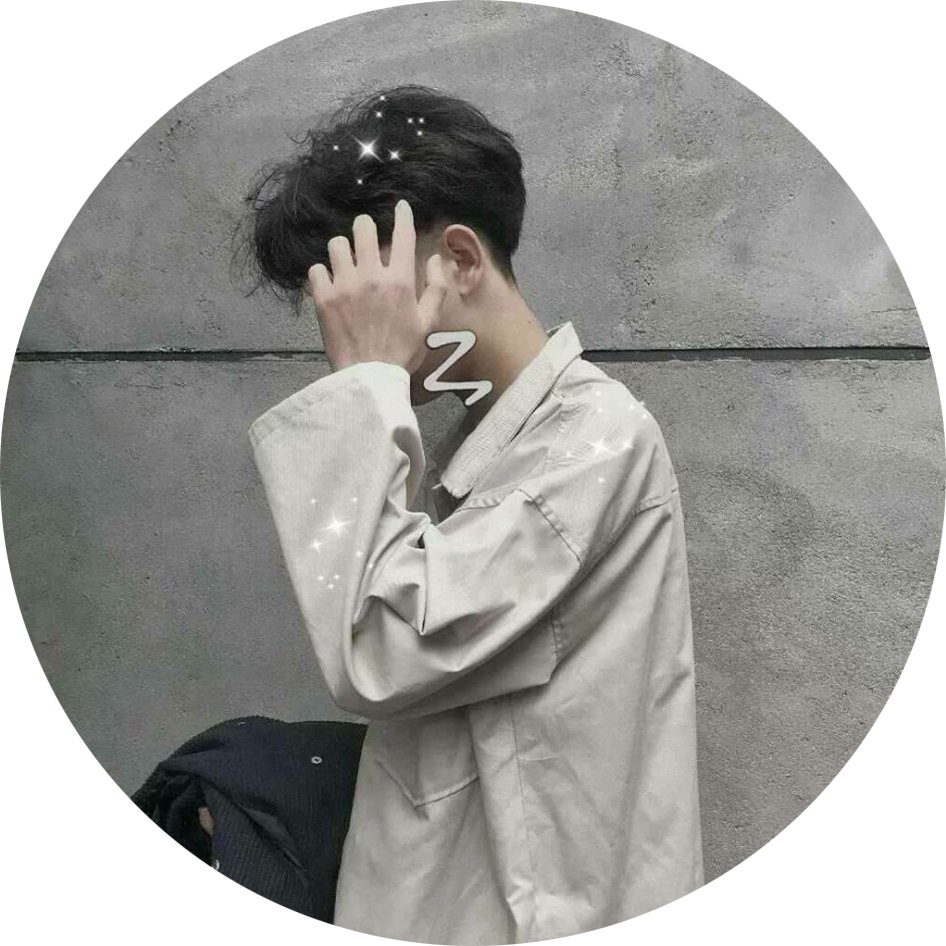
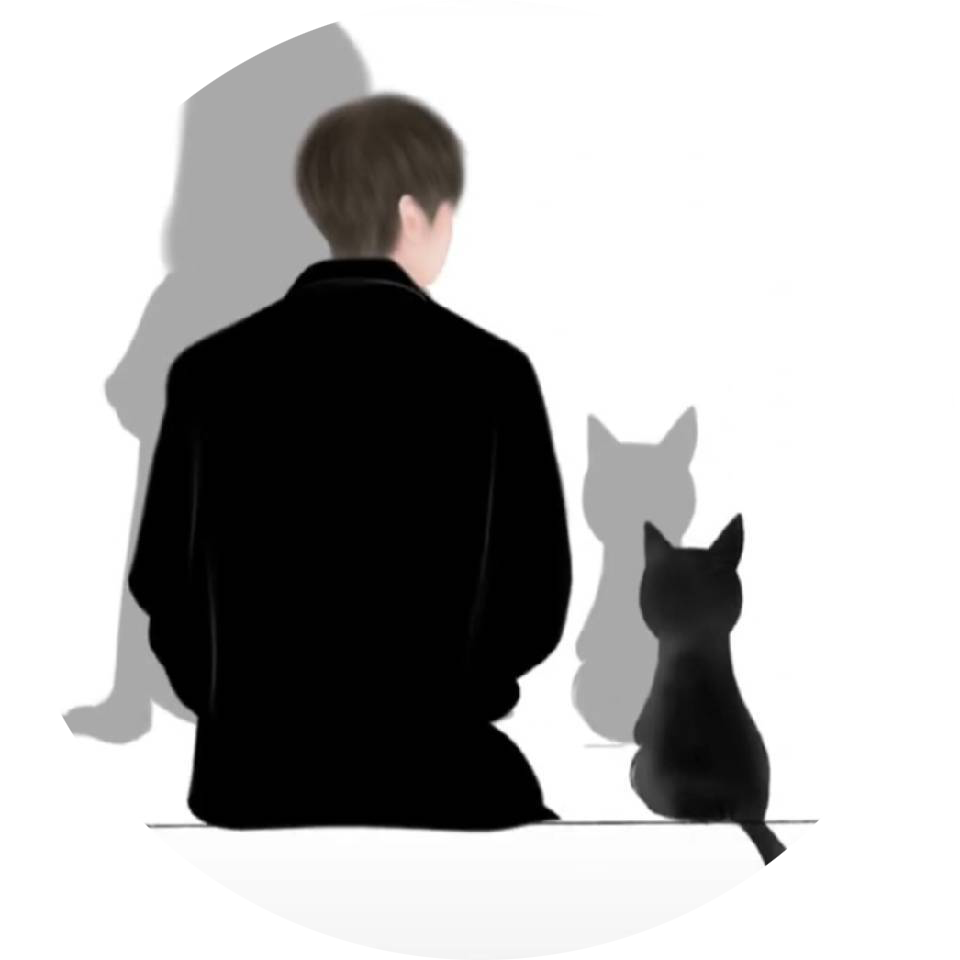

景点导读
HQC
宾阳洞，原名叫灵岩寺，由宾阳中洞、宾阳北洞、宾阳南洞三个洞窟组成。宾阳洞始凿于北魏
景明元年（公元500 年），距今已有一千五百多年的历史，是北魏宣武帝为孝文帝、文昭皇后主持开凿的皇家第一
窟，用以铭记孝文帝迁都洛阳和进行汉化改革的历史功绩，也是我国正史中唯一有确切记载的石窟。
GH
奉先寺，主佛莲座北侧的题记称之为“大卢舍那像龛”，因为它隶属于当时的皇家寺院奉先寺
而俗称“奉先寺”。位于洛阳市龙门石窟西山南部，始雕年代说法不一，有说是唐代咸亨三年(672年)开始雕凿，
至唐代上元二年(675年)完成，是龙门石窟中规模最大、艺术精美、最具有代表性的大龛。
LJX
卢舍那大佛，是根据武则天自己的容貌仪态雕刻的佛像，更是龙门石窟中艺术水平最高、
整体设计最严密、规模最大的一座造像，以神秘微笑著称，被国外游客誉为“东方蒙娜丽莎”、“世界最美雕像”。
卢舍那大佛作于唐高宗咸亨三年（公元 672年），位于洛阳龙门西山南部山腰大卢舍那像龛，通高17.14米，头
高4米，耳长1.9米。
AAA
白园即白居易墓园，坐落于洛阳城南龙门东山琵琶峰上，占地44亩，是龙门石窟景区内的人
文自然胜景，处于山间林海中颇有仙风道骨之韵，是全国唯一的纪念白居易的主题公园。白居易，字乐天，晚
年居住洛阳18年，虽尊为"少傅"，但一生清贫，喜酒善诗，在龙门修香山寺，开八节滩，对龙门山水十分眷恋，
死后遵嘱葬于此。
景点评论
CGM
巩义石窟寺的碑石题记中，女性的身影异乎寻常得多。在《巩县石窟寺石
刻录》收录的94种唐代碑记中，有关女性的记载就多达30种。属于女性的温柔笔触，在坚硬的
石块下撑起一方小天地。这背后，是唐代女性地位的提高与女性意识的短暂觉醒。
ZZW
巩义石窟寺的碑石题记中，女性的身影异乎寻常得多。在《巩县石窟寺石
刻录》收录的94种唐代碑记中，有关女性的记载就多达30种。属于女性的温柔笔触，在坚硬的
石块下撑起一方小天地。这背后，是唐代女性地位的提高与女性意识的短暂觉醒。
YHT
清晨入古寺，初日照高林。曲径通幽处，禅房花木深。风过廊阁，檐铃一声轻响，
红灯笼也晃了几晃。我们凝视庄严法相，触摸香山寺的纹理， 与往来秋风对话……
YZQ
初见卢舍那大佛，是需要仰视的。与峭壁上的这尊大佛像相遇，那种置身于天地间
的震撼、冲击而来的气势，仿佛把人都整个身心都摄了去。原来，世间最大的力量，既立于天地，又超然
于尘世。最大的感动，可以归于宁静，不着片语。
HJT
总要来一趟洛阳，看一看龙门石窟的卢舍那大佛，听一听专业的讲解，踏上青石板路，
亲身感受下1500多年的历史，看香山和龙门山对峙而立，伊河水山间北流形成天然伊阙，去品一品大自然的鬼斧神工。